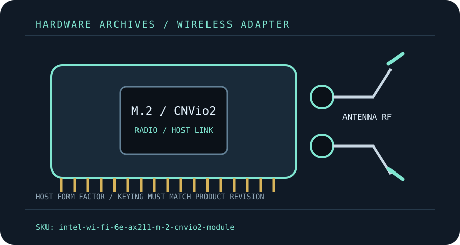

[ MODEL-SPECIFIC M.2 / PCIE WI-FI HARDWARE ]
Intel Wi-Fi 6E AX211 M.2 CNVio2 Module
AX211 is a compact two-stream Wi-Fi 6E module for compatible Intel CNVio2 hosts, not a generic PCIe Wi-Fi card.
IDENTIFICATION: Match the full model, hardware revision, regulatory region and radio-module label before ordering replacements or selecting drivers. Values are manufacturer specifications, not a guaranteed measurement.

Dedicated wireless specifications
| Cataloged product | Intel Wi-Fi 6E AX211 M.2 CNVio2 Module |
|---|---|
| Chipset / radio module | Intel AX211 (CNVio2 integrated connectivity module; not a self-contained PCIe WLAN controller). |
| Wi-Fi generation / standards | Wi-Fi 6E, IEEE 802.11ax; interoperates with prior 802.11a/b/g/n/ac networks. |
| Radio bands, channels & width | 2.4 GHz, 5 GHz and 6 GHz; up to 160 MHz channels where supported. 6 GHz channel availability is region- and OS-dependent. |
| Spatial streams / nominal link rates | 2×2 TX/RX; Intel lists up to 2.4 Gb/s nominal maximum link rate (not application throughput). |
| Host interface / form factor / keying | M.2 2230 Key E module using CNVio2, with separate Bluetooth USB signaling; this is not the standard PCIe/USB AX210 interface. The host must expose a compatible Intel CNVio2 connection. |
| Antenna connectors | Two miniature MHF4-style coax antenna sockets (MAIN/AUX); confirm the exact connector on the module before mating pigtails. |
| Bluetooth | Bluetooth 5.2; Bluetooth requires compatible host USB routing and its own driver. |
| Operating-system / driver compatibility | Intel Windows wireless driver package covers supported Windows 10/11 releases; Intel Wi-Fi driver support does not imply Linux distribution certification or OEM firmware support. |
| Regulatory and host caveats | CNVio2 is platform-specific. A physically fitting Key-E socket alone is insufficient: many AMD, older Intel and PCIe-only hosts cannot initialize AX211. Follow the laptop/board OEM supported-part list and antenna arrangement. 6 GHz access requires a region-approved access point, permitted channels and a supported OS/driver; regulatory availability is not universal. |
Model-specific installation notes
Install only with the host powered down and follow the manufacturer’s manual for slot, cable, antenna and ESD precautions. Fit and electrical compatibility are separate questions: the host must support the stated interface, firmware and driver for this exact SKU.
Nominal PHY rates vary with channel width, modulation, signal quality, regulatory domain, AP capabilities and concurrent client traffic. They are not measured Internet or application throughput. Confirm local 6 GHz/5 GHz channel permissions before deployment.
Manufacturer sources
- Intel AX211 specificationsIntel ARK specifies AX211 link characteristics and 2×2 radio capabilities.
- Intel Wi-Fi drivers for Windows 10 and Windows 11Intel driver release and supported-adapter information; OEMs may customize packages.
Source pages can be regional or revision-specific. Use the exact manufacturer page and package matching the label on the adapter and host.